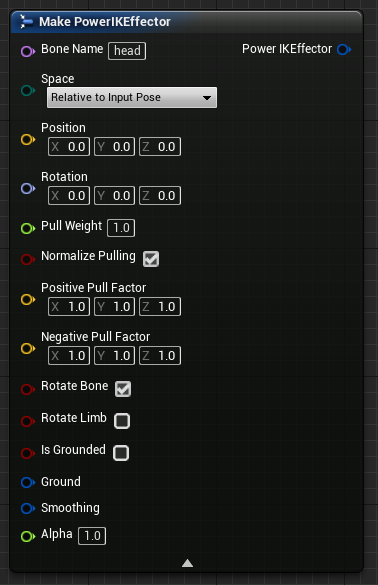
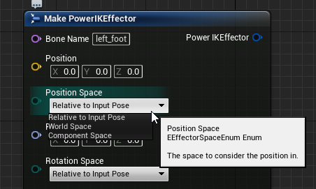

Effectors
What is a Power IK Effector?
Effectors are how you tell the solver what bone of the skeleton you want to pull, and where you want it to go. Each effector is associated with a single bone in the skeleton and supplies a position and rotation for that bone to reach towards.

If only 1 effector is added, it will pull the entire skeleton as though the skeleton were parented to it. Once multiple effectors are present, the solver is able to do interesting work by creating a pose that reaches both effectors simultaneously.
For example, by adding an effector to both feet of an ogre, you can pull 1 foot upwards while leaving the other foot on the ground. The hips of the ogre will translate and rotate to help the overall skeleton reach this desired goal.
Bone Name
This is the name of the bone that this effector will affect. The name in this field must match the name in the skeleton precisely.
Bones cannot be affected by more than 1 effector.
Position and Rotation Space
The Position (Vector) and Rotation (Rotator) inputs are considered to be in one of three possible spaces:
- Relative to Input Pose: interprets inputs as character-space offsets relative to the affected bone in the pose that is passed as input. This is the default space.
- World Space: interprets inputs as world space.
- Component Space: interprets inputs as being relative to the root of the Skeletal Mesh.

Relative To Input Pose
By default, the space of the effector is Relative to Input Pose with zero position and rotation values. This is essentially telling the solver to not modify the input pose (ie do nothing).
All three spaces are useful in different scenarios. But the most common is Relative to Input Pose. This can be used to nudge the skeleton from it’s animated position. For example, by taking a walking animation and pulling the feel outwards and the hips down you can turn a walk into a crouch-walk.
Space Conversions
Blueprint and C++ can easily convert rotations and positions between any space in Unreal. The Component Space and World Space options are simply conveniences. Internally, the IK solver uses only Component Space (called Character Space in the SDK).
Separate Position / Rotation Spaces
As of v1.46 Power IK supports separate spaces for position and rotation. This is especially useful for rotating a skeleton while leaving it's position unaffected (by leaving it zero relative to the input pose). This is the basis of a "look at" rig.
Pull Weight
The Pull Weight of an effector determines how much influence the effector has over the whole body relative to other effectors.
If all the Pull Weight values are the same, they all have the same relative influence on the skeleton. This is regardless of their absolute values.
In cases where you want simple reaching behavior, leaving all the Pull Weights set to 1.0 will split the influence of the effectors evenly.
Power IK weights the unaffected parts of the skeleton based on distance (along the skeleton) to the effectors. This provides decent influence distribution by default.
Adjusting Pull Weights is sometimes necessary in situations where one part of the body needs to dominate the pose. For example, to setup a 3-point VR tracking solver, tune 100% of the weight on the head tracker and 0% on the hands. This will cause the hands to not push the torso around and instead have the hips and torso follow the head.
Normalize Pulling
This checkbox is on by default. When on, the skeleton will move with the effectors completely; neither over or under shooting. The influence of the effectors on the bones is 'normalized'.
But in some cases it may be desirable not to have normalized influence. Either because the character at large is moved by other means, or the desired behavior should be localized to some sub-section of the skeleton.
More precise control over the influence can be achieved by setting "Normalize Pulling" to OFF. Now the effector will pull on the body proportional to the Pull Weight multiplied by the inverse distance to the body part.
This is especially useful in conjuction with Positive and Negative Pull Factors.
Positive/Negative Pull Factors
The Positive and Negative Pull Factors supply two 3d vectors to allow scaling the influence of an effector along all three axes in both the positive and negative directions.
Negative Pull Factors were used in the "Prone Mannequin" example to allow the mannequin to prefer reaching when tilted downwards, and lie flat when tilted upwards. This non-linear behavior is achieved by giving the hands a low negative pull factor in the Z direction (up/down). So the influence they have on the body is greater in the positive Z direction and less in the negative Z.
Rotate Bone
Rotate Bone is checked off by default. When off, the bone will simply inherit the rotation of it's parent. When on, the bone matches the rotation of the effector.
Both are useful depending on the situation.
Rotate Limb
Rotate Limb is off by default. When on, the effector rotation will be smoothly distributed up the limb. This is useful for spines and look-at behaviors.
Rotate Limb is demonstrated on the hanging snake demo in the Unreal examples project.
Alpha
This value ranges from 0 to 1 and set to 1 by default. The Alpha value blends the influence of this effector on/off.
This can be easier than blending the target transforms.
For example, to animate a character opening a door, the effector position may be left at the location of the door knob, and the alpha value may be blended off/on/off throughout the duration of the reach animation.
This is easier than blending the target position.